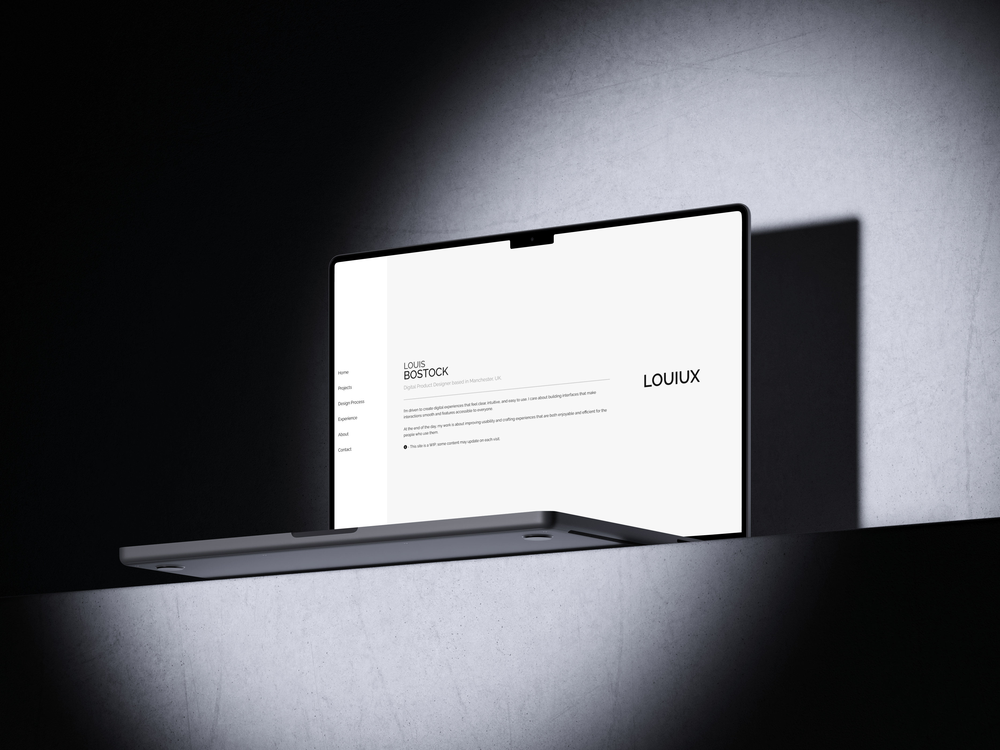
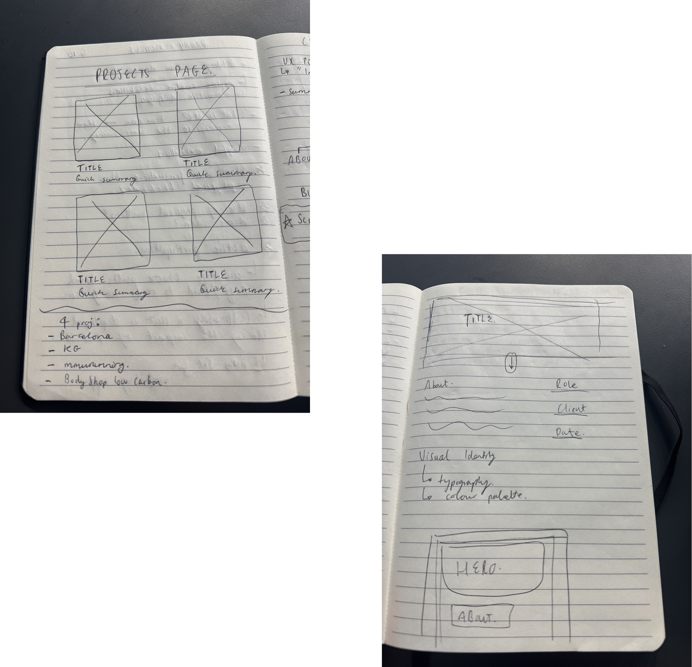

ABOUT THE PROJECT
Improving Professional
Online Presence
This work was completed as part of my Working In A Digital World module in
final year of university. The brief was to create a set of professional materials that would
help prepare us for entering industry.
I developed this personal portfolio website by coding it in VS Code, focusing on clean structure,
clear navigation, and a layout that effectively showcases my projects.
Alongside this, I designed a professional business card in Figma, exploring visual identity,
typography, and brand consistency.
To build an online presence, I also created an Instagram page dedicated to my work, allowing me
to present my projects in a visual, accessible format.
ROLE
UX/UI Design
Web Developer
CLIENT
University project
DATE
September 2025 - December 2025
